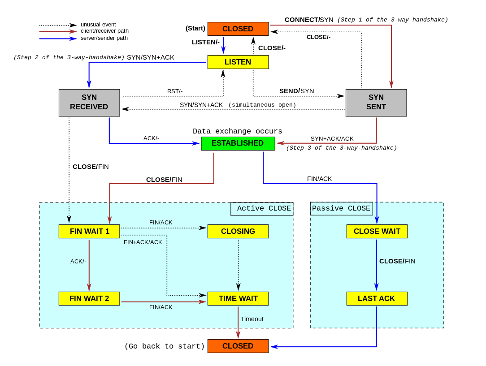

Структура заголовка
|
0 — 3 |
4 — 9 |
10 — 15 |
16 — 31 | |||||||||||||||||||||||||||||
|
0 |
Порт источника, Source Port |
Порт назначения, Destination Port | ||||||||||||||||||||||||||||||
|
32 |
Порядковый номер, Sequence Number (SN) | |||||||||||||||||||||||||||||||
|
64 |
Номер подтверждения, Acknowledgment Number (ACK SN) | |||||||||||||||||||||||||||||||
|
96 |
Длина заголовка |
Зарезервировано |
Флаги |
Размер Окна | ||||||||||||||||||||||||||||
|
128 |
Контрольная сумма |
Указатель важности | ||||||||||||||||||||||||||||||
|
160 |
Опции (необязательное, но используется практически всегда) | |||||||||||||||||||||||||||||||
|
160/192+ |
Данные | |||||||||||||||||||||||||||||||
Порт источника, Порт назначения
Эти 16-битные поля содержат номера портов — числа, которые определяются по специальному списку.
Порт источника идентифицирует приложение клиента, с которого отправлены пакеты. Ответные данные передаются клиенту на основании этого номера.
Порт назначения идентифицирует порт, на который отправлен пакет.
Порядковый номер выполняет две задачи:
Поскольку поток TCP в общем случае может быть длиннее, чем число различных состояний этого поля, то все операции с порядковым номером должны выполняться по модулю 232. Это накладывает практическое ограничение на использование TCP. Если скорость передачи коммуникационной системы такова, чтобы в течение MSL (максимального времени жизни сегмента) произошло переполнение порядкового номера, то в сети может появиться два сегмента с одинаковым номером, относящихся к разным частям потока, и приёмник получит некорректные данные.
Acknowledgment Number (ACK SN) (32 бита) - если установлен бит ACK, то это поле содержит порядковый номер октета, который отправитель данного сегмента желает получить. Это означает, что все предыдущие октеты (с номерами от ISN+1 до ACK-1 включительно) были успешно получены.
Длина заголовка (смещение данных)
Это поле определяет размер заголовка пакета TCP в 4-байтных (4-октетных) словах. Минимальный размер составляет 5 слов, а максимальный — 15, что составляет 20 и 60 байт соответственно. Смещение считается от начала заголовка TCP.
Зарезервировано (6 бит) для будущего использования и должно устанавливаться в ноль. Из них два (5-й и 6-й) уже определены:
Это поле содержит 6 битовых флагов:
Количество байт данных начиная с последнего номера подтверждения, которые может принять отправитель данного пакета. Иначе говоря, отправитель пакета располагает для приема данных буфером длинной "размер окна" байт.
Поле контрольной суммы — это 16-битное дополнение к сумме всех 16-битных слов заголовка (включая псевдозаголовок) и данных. Если сегмент, по которому вычисляется контрольная сумма, имеет длину не кратную 16-ти битам, то длина сегмента увеличивается до кратной 16-ти, за счет дополнения к нему справа нулевых битов заполнения. Биты заполнения (0) не передаются в сообщении и служат только для расчёта контрольной суммы. При расчёте контрольной суммы значение самого поля контрольной суммы принимается равным 0.
16-битовое значение положительного смещения от порядкового номера в данном сегменте. Это поле указывает порядковый номер октета, которым заканчиваются важные (urgent) данные. Поле принимается во внимание только для пакетов с установленным флагом URG. Используется для внеполосных данных.
Могут применяться в некоторых случаях для расширения протокола. Иногда используются для тестирования. На данный момент в опции практически всегда включают 2 байта NOP (в данном случае 0x01) и 10 байт, задающих timestamps. Вычислить длину поля опции можно через значение поля смещения.
В отличие от традиционной альтернативы — UDP, который может сразу же начать передачу пакетов, TCP устанавливает соединения, которые должны быть созданы перед передачей данных. TCP соединение можно разделить на 3 стадии:

Упрощённая диаграмма состояний TCP. Более подробно в TCP EFSM diagram (на английском языке)
|
Состояния сеанса TCP | |
|
CLOSED |
Начальное состояние узла. Фактически фиктивное |
|
LISTEN |
Сервер ожидает запросов установления соединения от клиента |
|
SYN-SENT |
Клиент отправил запрос серверу на установление соединения и ожидает ответа |
|
SYN-RECEIVED |
Сервер получил запрос на соединение, отправил ответный запрос и ожидает подтверждения |
|
ESTABLISHED |
Соединение установлено, идёт передача данных |
|
FIN-WAIT-1 |
Одна из сторон (назовём её узел-1) завершает соединение, отправив сегмент с флагом FIN |
|
CLOSE-WAIT |
Другая сторона (узел-2) переходит в это состояние, отправив, в свою очередь сегмент ACK и продолжает одностороннюю передачу |
|
FIN-WAIT-2 |
Узел-1 получает ACK, продолжает чтение и ждёт получения сегмента с флагом FIN |
|
LAST-ACK |
Узел-2 заканчивает передачу и отправляет сегмент с флагом FIN |
|
TIME-WAIT |
Узел-1 получил сегмент с флагом FIN, отправил сегмент с флагом ACK и ждёт 2*MSL секунд, перед окончательным закрытием соединения |
|
CLOSING |
Обе стороны инициировали закрытие соединения одновременно: после отправки сегмента с флагом FIN узел-1 также получает сегмент FIN, отправляет ACK и находится в ожидании сегмента ACK (подтверждения на свой запрос о разъединении) |
Процесс начала сеанса TCP (также называемый «рукопожатие» (англ. handshake)), состоит из трёх шагов.
1. Клиент, который намеревается установить соединение, посылает серверу сегмент с номером последовательности и флагом SYN.
2. Если клиент получает сегмент с флагом SYN, то он запоминает номер последовательности и посылает сегмент с флагом ACK.
3. Если сервер в состоянии SYN-RECEIVED получает сегмент с флагом ACK, то он переходит в состояние ESTABLISHED.
Процесс называется «трёхэтапным согласованием» (англ. three way handshake), так как несмотря на то что возможен процесс установления соединения с использованием четырёх сегментов (SYN в сторону сервера, ACK в сторону клиента, SYN в сторону клиента, ACK в сторону сервера), на практике для экономии времени используется три сегмента.
Пример базового 3-этапного согласования:
TCP A TCP B
1. CLOSED LISTEN
2. SYN-SENT --> <SEQ=100><CTL=SYN> --> SYN-RECEIVED
3. ESTABLISHED <-- <SEQ=300><ACK=101><CTL=SYN,ACK> <-- SYN-RECEIVED
4. ESTABLISHED --> <SEQ=101><ACK=301><CTL=ACK> --> ESTABLISHED
5. ESTABLISHED <-- <SEQ=301><ACK=101><CTL=ACK> <-- ESTABLISHED
В строке 2 TCP A начинает передачу сегмента SYN, говорящего об использовании номеров последовательности, начиная со 100. В строке 3 TCP B передает SYN и подтверждение для принятого SYN в адрес TCP A. Надо отметить, что поле подтверждения показывает ожидание TCP B приёма номера последовательности 101, подтверждающего SYN с номером 100.
В строке 4 TCP A отвечает пустым сегментом с подтверждением ACK для сегмента SYN от TCP B; в строке 5 TCP B передает некоторые данные. Отметим, что номер подтверждения сегмента в строке 5 (ACK=101) совпадает с номером последовательности в строке 4 (SEQ=101), поскольку ACK не занимает пространства номеров последовательности (если это сделать, придется подтверждать подтверждения — ACK для ACK).
Существуют экспериментальные расширения протокола TCP, сокращающие количество пакетов при установлении соединения, например TCP Fast Open[en]. Ранее также существовало расширение T/TCP. Для прозрачного шифрования данных предлагается использовать расширение tcpcrypt.
См. также: Алгоритм Нейгла и Медленный старт
При обмене данными приёмник использует номер последовательности, содержащийся в получаемых сегментах, для восстановления их исходного порядка. Приёмник уведомляет передающую сторону о номере последовательности, до которой он успешно получил данные, включая его в поле «номер подтверждения». Все получаемые данные, относящиеся к промежутку подтвержденных последовательностей, игнорируются. Если полученный сегмент содержит номер последовательности больший, чем ожидаемый, то данные из сегмента буферизируются, но номер подтвержденной последовательности не изменяется. Если впоследствии будет принят сегмент, относящийся к ожидаемому номеру последовательности, то порядок данных будет автоматически восстановлен исходя из номеров последовательностей в сегментах.
Для того, чтобы передающая сторона не отправляла данные интенсивнее, чем их может обработать приёмник, TCP содержит средства управления потоком. Для этого используется поле «окно». В сегментах, направляемых от приёмника передающей стороне, в поле «окно» указывается текущий размер приёмного буфера. Передающая сторона сохраняет размер окна и отправляет данных не более, чем указал приёмник. Если приёмник указал нулевой размер окна, то передача данных в направлении этого узла не происходит, пока приёмник не сообщит о большем размере окна.
В некоторых случаях передающее приложение может явно затребовать протолкнуть данные до некоторой последовательности принимающему приложению, не буферизируя их. Для этого используется флаг PSH. Если в полученном сегменте обнаруживается флаг PSH, то реализация TCP отдает все буферизированные на текущий момент данные принимающему приложению. «Проталкивание» используется, например, в интерактивных приложениях. В сетевых терминалах нет смысла ожидать ввода пользователя после того, как он закончил набирать команду. Поэтому последний сегмент, содержащий команду, обязан содержать флаг PSH, чтобы приложение на принимающей стороне смогло начать её выполнение.
Завершение соединения можно рассмотреть в три этапа: